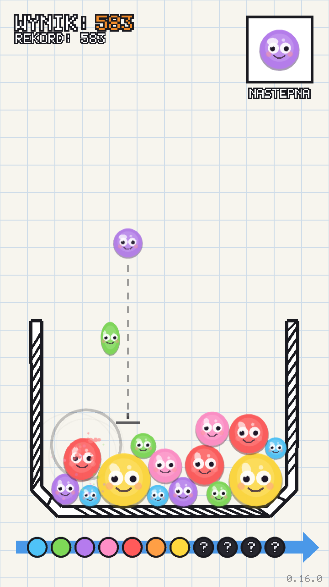
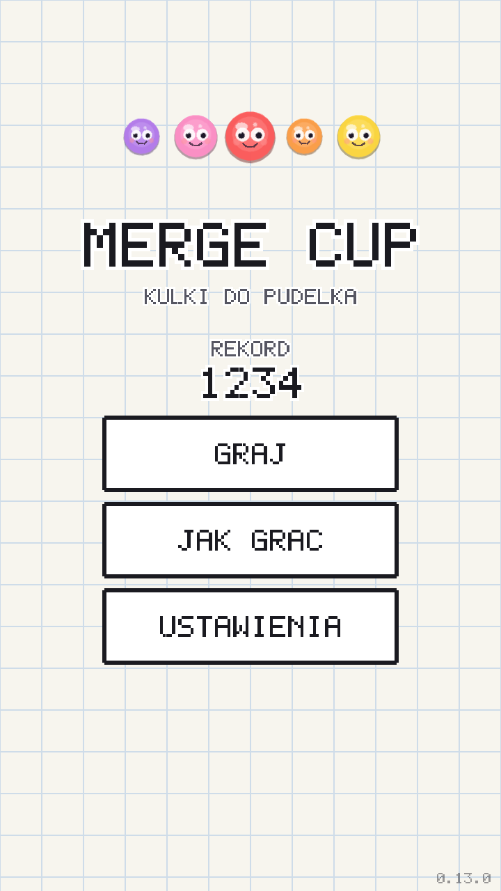
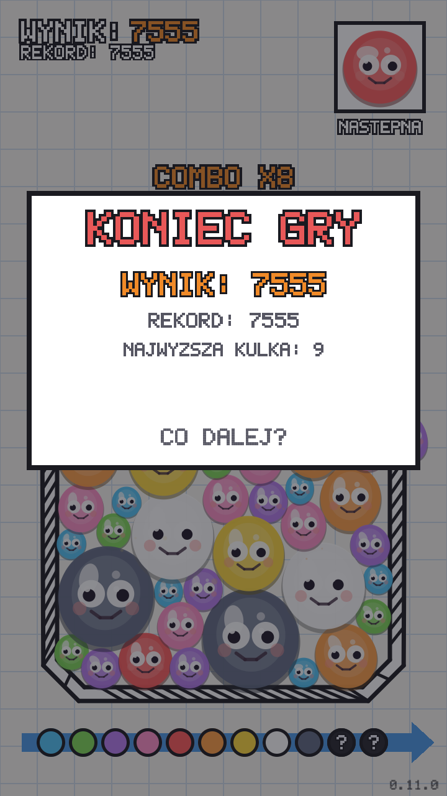
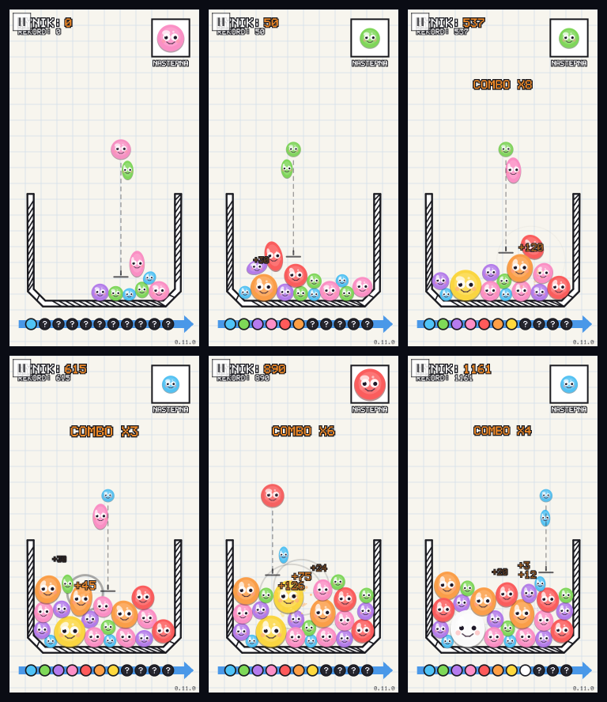

Merge Cup to prosta gra na telefon: dotykasz ekranu tam, gdzie ma spaść kulka, i puszczasz palec — kulka wpada do pudła. Gdy zetkną się dwie kulki tego samego poziomu, łączą się w jedną większą; im większa kulka, tym więcej miejsca zajmuje. Poziomów jest jedenaście.
Połączenia w krótkim odstępie zbijają combo i mnożą punkty, aż do x8 — opłaca się więc łączyć seriami, a nie na chybił trafił. Run kończy się dopiero wtedy, gdy kulka naprawdę wypadnie z pudła bokiem; samo przelanie się stosu nad rant gry nie przerywa, bo kulka może jeszcze wpaść z powrotem. Wynik i rekord zostają na telefonie, więc jest co poprawiać.
Co jest w środku:
• jedenaście poziomów kulek — każdy większy od poprzedniego,
• combo z mnożnikiem do x8,
• jedno sterowanie, wygodne jedną ręką: dotknij, przesuń, puść,
• menu z ustawieniami: dźwięk włącz/wyłącz, wygląd kulek (slime albo kredka) i poziom slimu w czterech stopniach — wszystko pamiętane na urządzeniu,
• systemowy przycisk „cofnij” wraca do menu i zatrzymuje run,
• kalibracja dotyku: jeśli na Twoim telefonie dotyk trafia obok przycisków, dotykasz czterech punktów i gra sama się poprawia,
• wynik i rekord zapisane na telefonie — bez konta i bez chmury,
• działa w całości offline: nic nie wysyła i nie zbiera żadnych danych,
• bez reklam i bez zakupów w aplikacji,
• mała: poniżej 1 MB, instaluje się w chwilę.
Wymagania: Android 5.0 lub nowszy, telefon 64-bit.Merge Cup is a simple game for your phone: touch the screen where the ball should fall and lift your finger — the ball drops into the box. When two balls of the same level touch, they join into one bigger ball; the bigger the ball, the more room it takes. There are eleven levels.
Merges made in quick succession build a combo and multiply your score, up to x8 — so chaining them pays off. A run ends only when a ball actually falls out of the box to the side; the pile spilling over the rim does not stop the game by itself, because the ball may still fall back in. Your score and best result stay on the phone, so there is always something to beat.
What is inside:
• eleven ball levels — each one bigger than the last,
• combos with a multiplier of up to x8,
• one control, comfortable with one hand: touch, slide, release,
• a menu with settings: sound on/off, ball style (slime or pencil) and the slime level in four steps — all remembered on the device,
• the system Back button returns to the menu and pauses the run,
• touch calibration: if taps land off the buttons on your phone, touch four points and the game corrects itself,
• score and best result saved on the phone — no account, no cloud,
• works entirely offline: it sends nothing and collects no data,
• no ads and no in-app purchases,
• small: under 1 MB, installs in a moment.
Requirements: Android 5.0 or newer, 64-bit phone.
Instalacja: pobierz plik i otwórz go na telefonie; Android zapyta o zgodę na instalację spoza sklepu. Starsze wersje i changelog: wydanie na GitHubie.Install: download the file and open it on the phone; Android will ask to allow installs from outside the store. Older versions and changelog: release on GitHub.
Zrzuty ekranuScreenshots

Rozgrywka: kulki w pudle, a nad nim kulka gotowa do zrzuceniaGameplay: balls in the box, with the next ball ready to drop above

Ekran tytułowy z rekordem i przyciskami: GRAJ, JAK GRAC, USTAWIENIATitle screen with your best score and PLAY / HOW TO PLAY / SETTINGS buttons

Ekran po zakończeniu runu: wynik i rekordScreen after a run ends: the score and the best result

Przebieg sesji w kilku klatkach: od zrzutu do połączeniaA session in a few frames: from drop to merge
Historia wersjiVersion history
0.16.0
Naprawione przesunięcie dotyku w pionie — u źródła. SDL na Androidzie normalizuje dotyk przez rozmiar powierzchni, a potem mnoży go przez rozmiar okna; gdy te rozmiary się różnią (okno bywa niższe niż powierzchnia), dotyk jest ściskany w pionie i im niżej na ekranie, tym bardziej trzeba klikać obok przycisku. Gra przelicza teraz dotyk na przestrzeń, w której naprawdę rysuje, więc przyciski trafiają same — bez kalibracji. Kalibracja z poprzedniej wersji została jako dodatkowe zabezpieczenie i zapisuje się raz na urządzeniu, nie za każdym uruchomieniem.
Fixed the vertical touch offset at its source. On Android SDL normalises touch by the surface size and then multiplies it by the window size; when those two differ (the window can be shorter than the surface) the touch is compressed vertically, and the lower on the screen you tap, the further off the button it lands. The game now converts touch into the space it actually draws in, so buttons hit on their own — no calibration needed. The calibration from the previous version stays as a fallback and is saved once per device, not on every launch.
0.15.0
Kalibracja dotyku. Jeśli na Twoim telefonie trzeba klikać obok przycisku, żeby go trafić, w USTAWIENIACH jest teraz pozycja KALIBRACJA: dotykasz czterech punktów na ekranie i gra sama liczy poprawkę (przesunięcie i skalę osobno dla każdej osi), a potem pamięta ją na urządzeniu. Obok jest WYCZYŚĆ, gdyby trzeba było wrócić do ustawień fabrycznych. Kółko w miejscu dotknięcia pokazuje się teraz na każdym ekranie, więc od razu widać, gdzie gra widzi palec.
Touch calibration. If on your phone you have to tap next to a button to hit it, the SETTINGS now have a CALIBRATION entry: touch four points on the screen and the game works out the correction (offset and scale separately for each axis) and remembers it on the device. Next to it there is a CLEAR button to go back to the defaults. The circle marking the touch point now appears on every screen, so you can see at once where the game thinks your finger is.
0.14.0
Poziom slimu w ustawieniach. Nowy wiersz SLIM ma cztery stopnie — od MIN, czyli spokojnych matowych kulek, do MAX, czyli pełnej galaretki z rozciąganiem, połyskiem i drganiem po uderzeniu. Wybór pamięta się na urządzeniu. Poprawione też klikanie w menu: przyciski działają na puszczeniu palca, mają 12 pikseli tolerancji i podświetlają się pod palcem, więc nie trzeba w nie trafiać co do piksela.
Slime level in the settings. The new SLIME row has four steps — from MIN, calm matte balls, up to MAX, full jelly with stretching, gloss and wobble on impact. The choice is remembered on the device. Menu tapping improved too: buttons act on finger release, have 12 pixels of tolerance and highlight under your finger, so you no longer need to hit them pixel-perfectly.
0.13.0
Zamiast przycisku pauzy działa systemowy przycisk (albo gest) „cofnij”: w trakcie gry wraca do menu i zatrzymuje run, w pozostałych ekranach cofa do menu, a w menu zamyka grę. Na komputerze to samo robi klawisz Esc. Przycisk pauzy zniknął z planszy, więc nic nie zasłania gry.
Instead of a pause button, the system Back button (or gesture) now does the job: during a run it returns to the menu and pauses it, on the other screens it goes back to the menu, and in the menu it closes the game. On desktop the Esc key does the same. The pause button is gone from the board, so nothing covers the game.
0.12.0
Menu. Ekran tytułowy z rekordem i trzema przyciskami: GRAJ, JAK GRAC i USTAWIENIA. W ustawieniach można wyłączyć dźwięk i wybrać wygląd kulek (slime albo rysunek kredką) — wybór pamięta się na urządzeniu. W grze doszedł mały przycisk pauzy w lewym górnym rogu (leży poza zakresem celowania, więc nie da się go trafić przy zrzucie), a ekran końca gry ma teraz przyciski OD NOWA i MENU. Naprawione też: gra nie pauzowała się, gdy aplikacja schodziła w tło — run przewracał się, gdy ktoś na chwilę wszedł do innej aplikacji.
Menu. A title screen with your best score and three buttons: PLAY, HOW TO PLAY and SETTINGS. In the settings you can turn the sound off and pick the ball style (slime or pencil drawing) — the choice is remembered on the device. In game there is a small pause button in the top-left corner (it sits outside the aiming range, so you cannot hit it while dropping a ball), and the game-over screen now has PLAY AGAIN and MENU buttons. Also fixed: the game did not pause when the app went to the background — the run collapsed if you switched to another app for a moment.
0.11.0
Koniec gry tylko przez wypadnięcie kulki bokiem. Usunąłem licznik, który kończył run, gdy kulka za długo wisiała nad rantem — teraz liczy się wyłącznie to, że kulka naprawdę wypadnie z pudła. Żeby gra nie mogła trwać w nieskończoność (kulki układały się w stabilną wieżę nad pudłem), kulka nad rantem delikatnie przewraca się na bok i stos się osypuje — run kończy się więc tak, jak powinien: przez wypadnięcie kulki. Pudło ma kształt naczynia: boki pionowe, a przejście boków w dno jest łagodnie zaokrąglone — bez ozdobników pod spodem.
Game over only when a ball falls out to the side. I removed the timer that ended the run when a ball hung above the rim for too long — now the only thing that counts is a ball actually leaving the box. So that the game cannot go on forever (balls used to stack into a stable tower above the box), a ball above the rim gently topples sideways and the pile spills — so the run ends the way it should: by a ball falling out. The box is shaped like a vessel: vertical sides with a gently rounded transition into the bottom — no decorations underneath.
0.10.0
Zmieniony koniec gry: run kończy się dopiero wtedy, gdy kulka naprawdę wypadnie z pudła bokiem — samo przelanie się stosu nad rant gry nie przerywa, bo kulka może jeszcze wpaść z powrotem. Jeśli kulka zostanie nad rantem dłużej niż 2,5 sekundy, jest traktowana jako wypadnięta. Naprawiona też fizyka: przy bardzo gęstym stosie kulka potrafiła zostać przepchnięta przez dno i run kończył się bez powodu.
Game over reworked: a run now ends only when a ball actually falls out of the box to the side — the pile spilling over the rim no longer stops the game by itself, because the ball may still fall back in. If a ball stays above the rim for more than 2.5 seconds it counts as lost. Physics fixed too: with a very dense pile a ball could be pushed through the bottom and end the run for no reason.
0.9.0
Kulka nie może już przestrzelić pudła. Celowanie jest przycięte do otworu — na skraju kulka dotyka ścianki, ale zawsze wpada do środka, więc run nie kończy się przez pomyłkę w celowaniu. Pudło ma teraz czysty, cylindryczny kształt: idealnie pionowe ściany i płaskie dno bez fazowanych narożników, więc kulki leżą od ściany do ściany.
The ball can no longer overshoot the box. Aiming is clamped to the opening — at the edge the ball touches the wall but always falls inside, so a misplaced drop no longer ends the run. The box now has a clean cylindrical shape: perfectly vertical walls and a flat bottom with no bevelled corners, so balls sit edge to edge.
0.8.0
Naprawione celowanie na telefonach. Dotyk był liczony w pikselach ekranu, a świat rysowany jest w mniejszym obszarze (z pasami u góry i u dołu), więc celowanie uciekało w bok — kliknięcie w środek trafiało w prawo, a skraje było trudno osiągnąć. Mapowanie liczone jest teraz z rzeczywistego obszaru rysowania i pokrywa się z tym, co widać na ekranie. Doszedł numer wersji na ekranie oraz kropka w miejscu dotknięcia, żeby od razu było widać, czy cel trafia pod palec.
Fixed aiming on phones. Touch was measured in screen pixels while the world is drawn in a smaller area (with bars at the top and bottom), so aiming drifted sideways — tapping the middle landed to the right and the edges were hard to reach. The mapping now comes from the actual drawing area and matches what you see. The version number is shown on screen, and a dot marks the touch point, so you can see at once whether the aim is under your finger.
0.7.0
Kulka leci po puszczeniu palca. Dotknięcie ekranu tylko celuje — możesz przesuwać palcem, a kulka spada dokładnie tam, gdzie go puścisz. Krótkie dotknięcie działa tak samo jak przeciągnięcie. Poprawiony celownik: prowadnica dochodzi aż do miejsca, w którym kulka wyląduje na stosie, i kończy się znacznikiem. Zakres celowania to cały ekran — jeśli chybisz i kulka spadnie obok pudła, run się kończy.
The ball drops when you release your finger. Touching the screen only aims — you can slide your finger, and the ball falls exactly where you let go. A quick tap works the same as a drag. Improved aim indicator: the guide runs all the way to where the ball will land on the pile and ends with a mark. The aiming range is the whole screen — if you miss and the ball lands beside the box, the run ends.